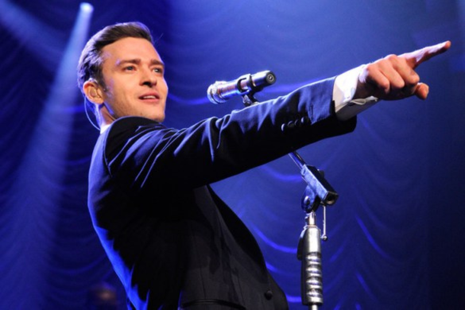
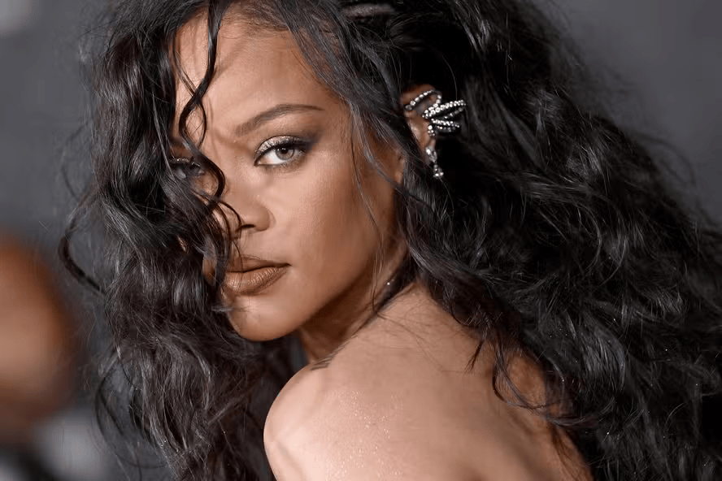
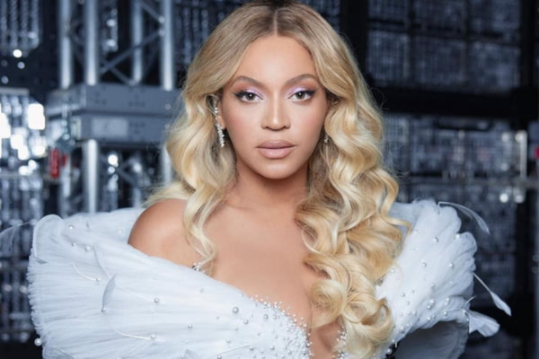
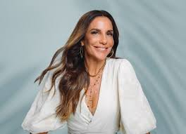
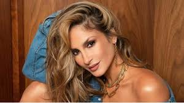
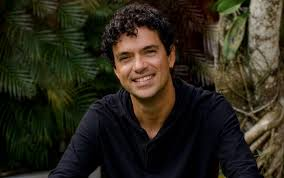

É assim que conhecemos música:
Para ter um site personalizado:
Com o lançamento do seu álbum "FutureSex/LoveSounds", Justin Timberlake dominou as paradas com hits como "SexyBack" e "My Love".
Ela lançou seu segundo álbum, "A Girl like Me", que incluía sucessos como "SOS" e "Unfaithful", consolidando sua posição como uma das principais artistas pop do momento.
Beyoncé continuou sua ascensão como uma artista solo após o Destiny's Child, lançando seu segundo álbum, "B'Day", que incluía músicas como "Irreplaceable" e "Deja Vu", mantendo-se no topo das paradas.
Conhecida como uma das maiores estrelas da música brasileira, Ivete Sangalo continuava a dominar as paradas com seu carisma e talento, lançando sucessos como "Poeira" e "Deixo".
Ainda como vocalista do Babado Novo em 2006, Claudia Leitte já estava ganhando grande reconhecimento com hits como "Amor Perfeito" e "Pensando em Você".
Cantor e compositor conhecido por suas músicas que mesclam MPB e pop, Jorge Vercillo estava em ascensão em 2006 com canções como "Homem-Aranha" e "Monalisa".
